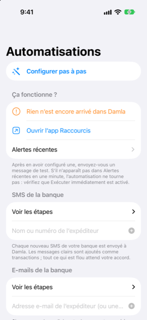

Guide › Capture automatique
Textos et e-mails de la banque
Envoyez chaque message de la banque à Damla avec un raccourci.
Une automatisation de raccourci transmet chaque nouveau texto ou e-mail de votre banque à Damla dès son arrivée, afin que les achats, les remboursements et les revenus soient enregistrés pour vous. Vous connectez une banque à la fois. Damla vous montre les étapes exactes, et vous créez l'automatisation une fois dans l'app Shortcuts.

Quand l'utiliser
- Votre banque envoie un texto chaque fois que vous dépensez, recevez de l'argent ou rechargez une carte ou un compte.
- Votre banque envoie aussi des alertes de transaction par e-mail, et vous voulez qu'elles soient enregistrées elles aussi.
- Vous voulez saisir moins de paiements à la main.
- Vous voulez une trace de ce qui a été envoyé à Damla et de ce qu'il a fait de chaque message.
Les actions que Damla propose dans Shortcuts
Les quatre actions de Damla apparaissent dans l'app Shortcuts quand vous ajoutez une nouvelle action :
- Ajouter à Damla — a un champ Texte et un champ Source (Message texte, E-mail ou Paiement Wallet).
- Ajouter un relevé à Damla — prend un PDF de relevé ou une capture d'écran et le met en file d'attente pour examen.
- Ajouter un paiement par carte à Damla — prend un commerçant, un montant et une carte (voir Paiements Apple Pay et Wallet).
- Combien puis-je dépenser — répond avec votre estimation de ce que vous pouvez dépenser sans risque, calculée par le code de prévision.
L'écran Automatisations dans Damla liste ces mêmes noms. Dans l'app Shortcuts, touchez Ajouter une action, puis Apps, puis Damla pour les trouver. Si l'une y manque, ouvrez Damla, forcez la fermeture de l'app Shortcuts et rouvrez-la. Si elle manque toujours, redémarrez l'iPhone.
Étape par étape
Dites d'abord à Damla qui est votre banque, puis créez l'automatisation.
- Ouvrez Damla, puis Réglages, puis Messages et relevés de la banque, puis Automatisations (Shortcuts).
- Dans la section « SMS de la banque » (ou « E-mails de la banque »), tapez le nom ou le numéro d'expéditeur de votre banque et touchez Ajouter. Pour un e-mail, une partie de l'adresse e-mail de l'expéditeur suffit.
- Touchez l'entrée de votre banque dans la liste pour voir les étapes exactes. Utilisez les boutons Copier si cela aide : l'un copie les étapes, l'autre une invite pour Apple Intelligence de l'app Shortcuts, et le troisième le nom d'expéditeur de votre banque, pour que rien ne soit mal tapé.
- Suivez les étapes dans l'app Shortcuts : touchez Automatisation, puis le bouton plus, puis choisissez Message (ou E-mail).
- Sous Expéditeur, choisissez votre banque. Laissez Le message contient vide.
- Choisissez Exécuter immédiatement, puis Suivant.
- Choisissez Nouvelle automatisation vierge, touchez Ajouter une action, cherchez Ajouter à Damla et sélectionnez-la.
- Réglez son champ Texte sur Entrée de raccourci, pour que le message lui-même soit transmis.
- Réglez Source sur Message texte (ou E-mail, pour que Damla sache d'où il vient).
- Touchez Terminé. Désactivez Notifier à l'exécution si cette option apparaît.
Ce qui advient de chaque message
- Un achat, un remboursement ou un revenu clair dont les chiffres de carte ou de compte correspondent à l'un de vos comptes est ajouté comme transaction immédiatement.
- Un message peu clair, une carte inconnue, une conversion en paiement échelonné ou un avis de relevé attend dans la Boîte de réception, où un seul geste suffit. Rien qui crée un engagement n'est ajouté sans votre confirmation.
- Une annonce de facture devient une facture attendue, pas une transaction.
- Les codes à usage unique sont ignorés et jamais conservés, même si le téléphone est verrouillé.
- La même alerte livrée deux fois n'est ajoutée qu'une fois.
Bon à savoir
- Envoyez-vous un message test après avoir configuré une automatisation. Sur l'écran Automatisations, la section Est-ce que ça marche ? montre quand le dernier message de la banque est arrivé, et Alertes récentes liste les alertes récentes, chacune avec ce qui a été fait et pourquoi. Si rien n'apparaît dans la minute, vérifiez que l'automatisation est réglée sur Exécuter immédiatement.
- Un téléphone verrouillé ne peut pas ouvrir les livres. Damla conserve le texto et l'ajoute la prochaine fois que vous déverrouillez l'app.
- La formulation dans l'app Shortcuts peut différer légèrement de ces étapes selon la version du logiciel de votre iPhone. Les noms à chercher sont Ajouter à Damla, Texte et Source.
- Les publicités, les avis de limite ou de taux et les rappels de votre banque sont écartés automatiquement ; voir Ce que Damla ignore, et annuler une alerte.
À voir aussi
- Comment fonctionne la capture automatique
- Paiements Apple Pay et Wallet
- L'assistant de configuration des automatisations
- La boîte de réception
Quelque chose n’est pas clair ou manque ? Écrivez à support@raveniq.ai en indiquant la page.